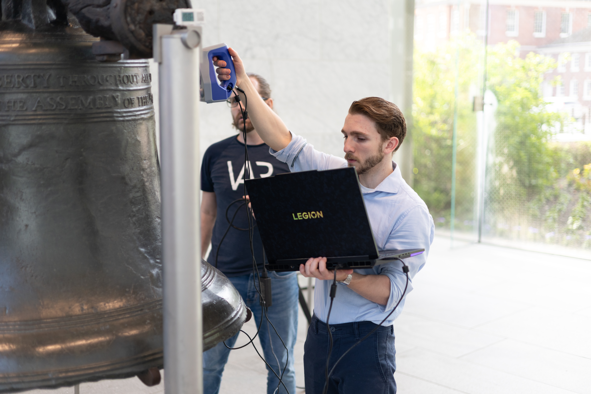
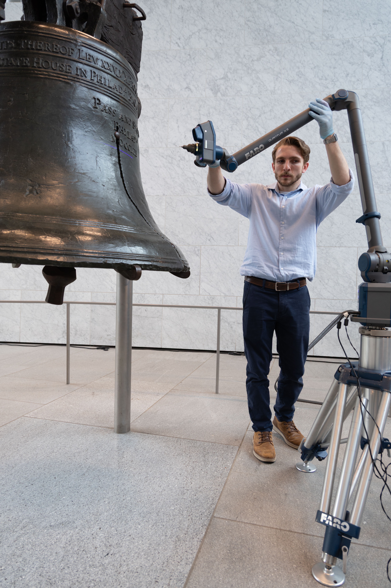
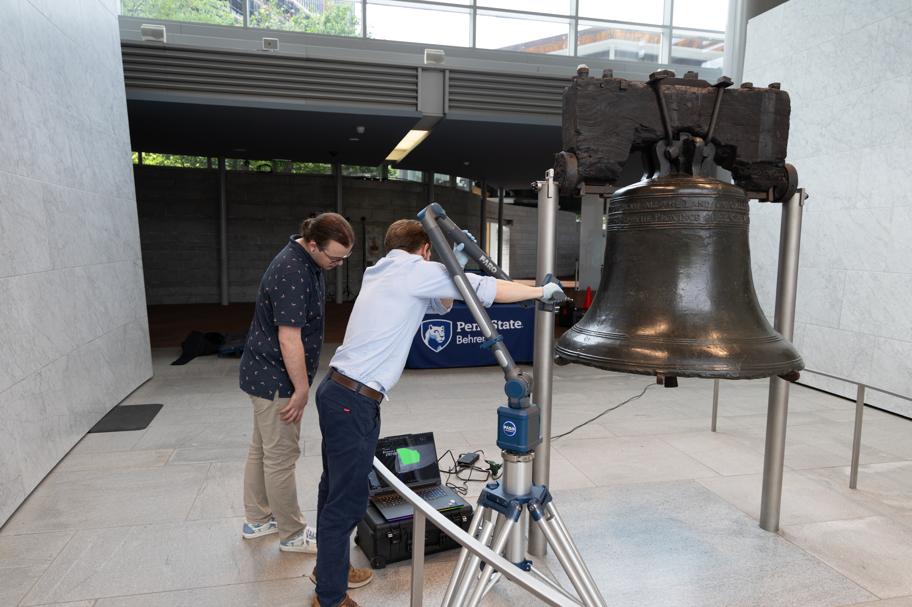
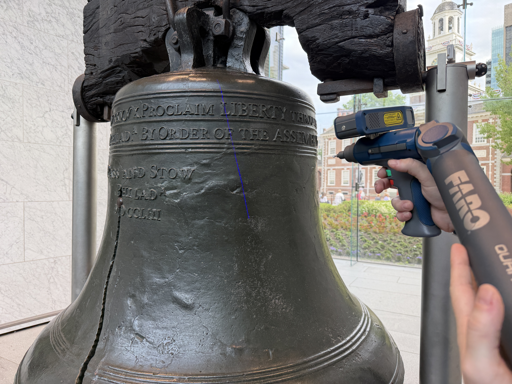
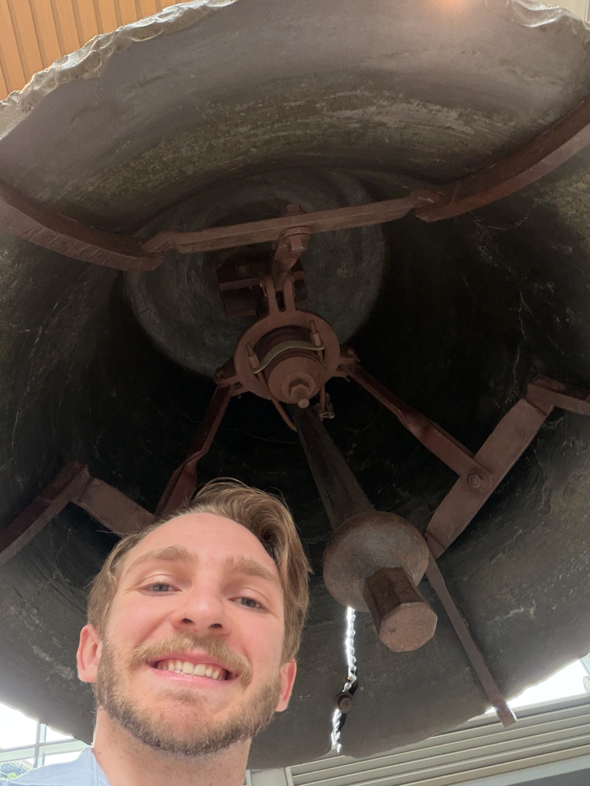
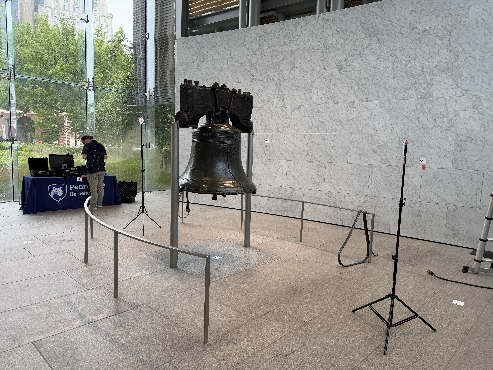

I helped create the Liberty Bell Digital Twin by scanning the Liberty Bell in Philadelphia and helping turn that capture into a high-resolution public model for preservation, research, education, and accessibility.
From May 25 to May 27, 2026, I worked with the team during limited museum access windows, using the Artec Space Spider II and Artec Eva to capture the bell's surface, inscriptions, crack, and harder-to-reach geometry while reviewing coverage live on a Lenovo Legion system.
I also handled a large share of the post-processing in Artec Studio and Blender, organizing scan passes, aligning data, cleaning the mesh, and preparing outputs for presentation. The full project also used FARO, Matterport, Canon, and 360 capture tools so the bell and its environment could be documented from multiple perspectives.






